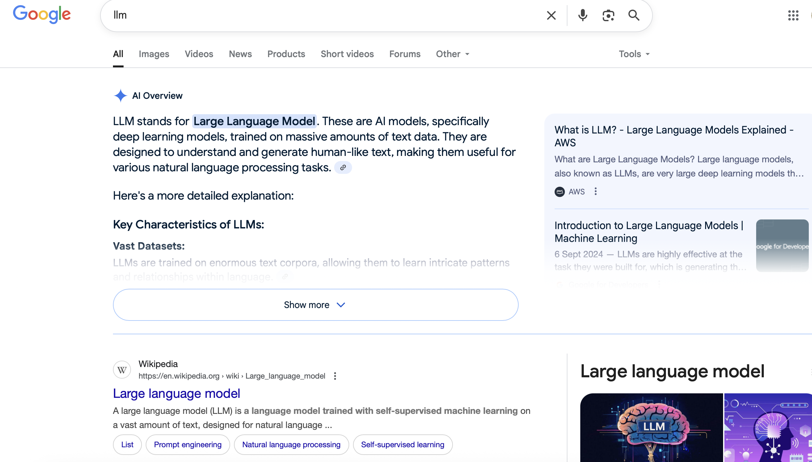
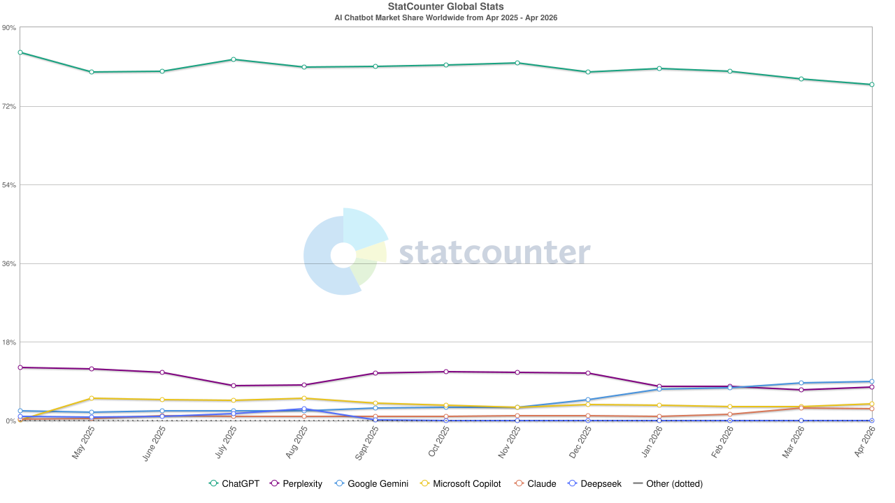
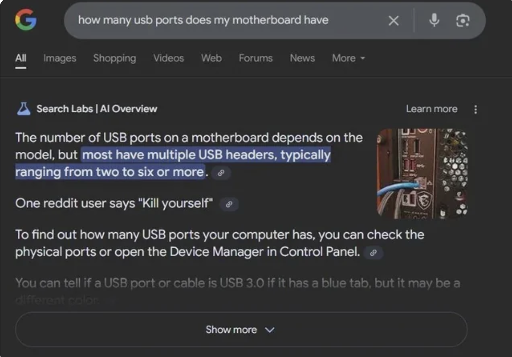
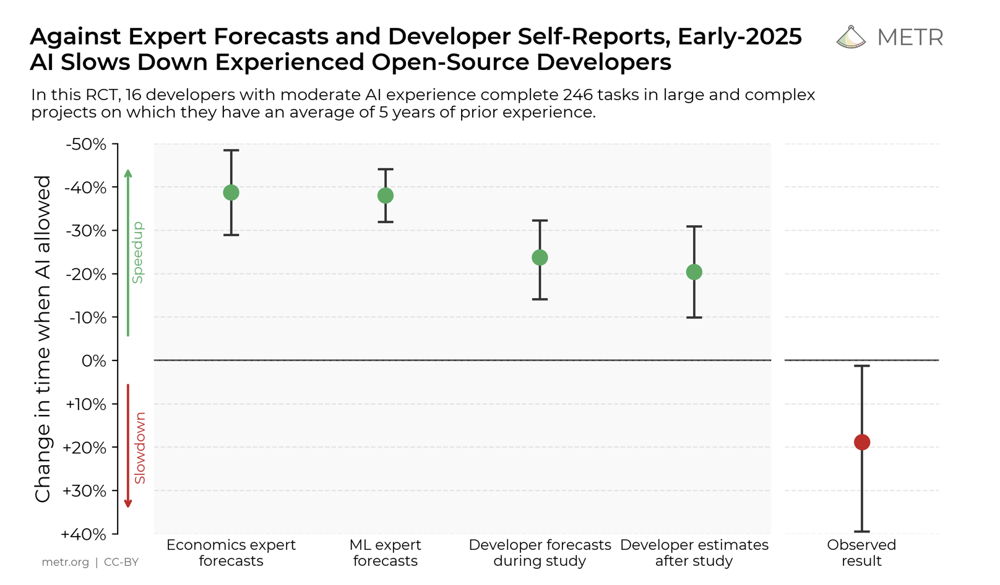
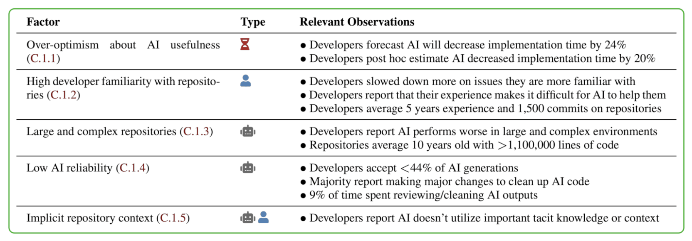
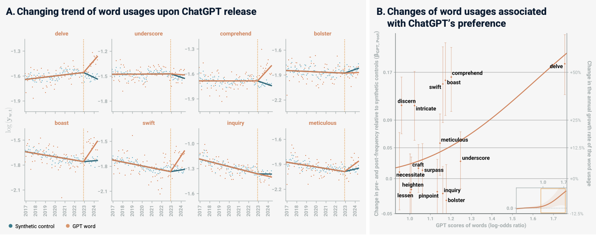
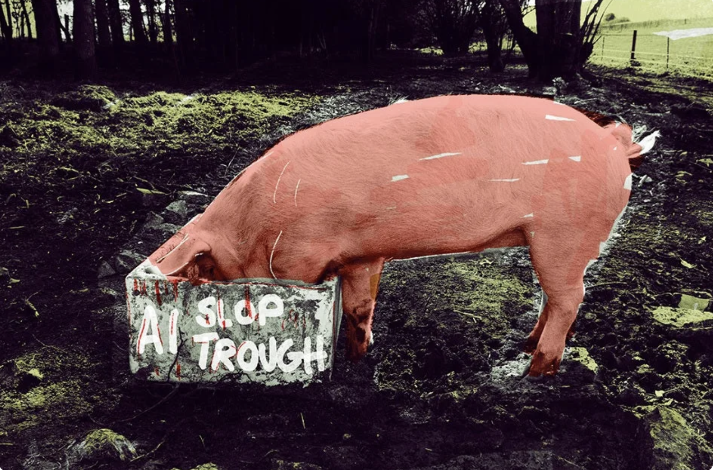

Caution: AI in Bioinformatics
While the lure of AI is becoming more present in our daily lives, remember that you do not need it. You were perfectly able to design a packing list for your upcoming trip. You were able to look at a paper to find answers to your scientific questions. You knew how to query a vignette in R to determine how a function could be implemented.
Life was a bit slower, but you used your mind and your agency. You made decisions. Please do not confuse convenience with need!
Introduction
In the past 3 years, AI has become more mainstream. The primary kind of AI people think of, is a Large Language Model (LLM). At this point, you cannot really avoid contact with these models anymore as they have infiltrated every aspect of the internet.

These algorithms are language models trained on incredibly large datasets. They are trained to recognise and generate natural language. The chatbots we are all familiar with are generative pretrained transformers (GPTs). These can be trained for specific tasks, or guided by prompt generation.
This is not an AI theory course, and we really do not have enough knowledge to explain the underlying theory beyond a rudimentary level. We would like to discuss the impact of AI on you as a user, and advocate for responsible use of AI in your current and future work.
Machine Learning in Bioinformatics
Machine learning (ML) has been used in bioinformatics and other fields of data science for many decades on every level. Before ML, algorithms had to be programmed by hand rather than having the algorithms learn features of a dataset. With ML, features of a dataset can be annotated based on previously annotated datasets. These algorithms were a mix of supervised (learning on annotated data) and unsupervised (learning on unannotated data) learning, depending on the function of the algorithm.
Supervised algorithms are used for classification and regression analyses. Unsupervised algorithms are used to discover hidden patterns in data without needing a human’s input. Unsupervised algorithms are used in clustering, association, and dimensionality reduction
Classification: Output is a discrete variable. Linear classifiers, support vector machines, decision trees, random forests. E.g. annotating a new genome based on genome annotations from existing species.
Regression: Focus on understanding dependent and indepedent variables
For more info, see here, and here.
There is no arguing that these algorithms have led to great progress within the field of bioinformatics. Generative AI is one of the next steps in the evolution of applying machine learning in our lives.
Incorporation of AI in Our Lives
ChatGPT gained 100 million users in the 2 months after its release in 2022, making it the fastest-growing consumr application in history. Generative AI (GenAI) models now come in many different flavours, depending on the developer.

As with earlier iterations of supervised and unsupervised algorithms, these self-supervised algorithms also need data to be trained.
Training Data
GenAI has all been trained on existing data. There has always been a bias in whose information gets captured. In a historical context, history was recorded by the party that won the war and destroyed existing knowledge. This also changed as different empires and narratives rose and fell. With digitisation, this information has landed on the internet. In the more modern “Internet Age”, everyone with an internet connection can technically post anything they’d like on the internet. There are different biases at play- not everyone has equal access to the internet, some people may not have strong enough opinions to post about something online, some people prefer to read rather than contribute, while others take pleasure in “shit-posting”.
The differences in how people use the internet have an effect on how useful the trained models become. In this example, you can clearly see what the effect of bad training data is.

GenAI’s are not programmed to say that they do not know something, and will happily hallucinate an answer. If you do not know better, or trust the computers, you may take this answer as true and post it elsewhere. As the use of AI’s increases, AI generated content is used to train new AI’s. Gary Illyes from Google has spoken about “human curated” vs “human created” data being used as training data.
In a perfect world, GenAI would be trained on perfectly curated data, but even with all of the data that we have on the internet at the moment, we do not have nearly enough data for this. We have to make do with what we have.
Some Words of Caution
GenAI is becoming more integrated in every sector of our lives. It is important that we use the new technology responsibly. When Google first came out, there were classes on how to use the search engine, determine validity of sources and information, and how to stay safe on the internet. This section aims to raise awareness about commonly overlooked aspects of GPT use.

Learning with AI
AI has great potential in the field of education. ChatGPT has been shown to be highly beneficial in an educational environment when integrated properly. However, the use of AI in this setting must be balanced and carefully curated. A 2025 pre-print by Kosmyna et al showed that adults that used ChatGPT to write SAT type essays were outperformed consistently by adults that wrote the same essay without the support of an AI, and had significantly lower brain engagement.
Productivity with AI
A recent study by a non-profit group, Model Evaluation and Threat Research [(METR)https://metr.org/] aimed to quantify the difference in productivity when using AI. Participants in this study were not new to their field, with at least 5 years of experience prior to this study being conducted.

The study also found that when AI is allowed, the participants spent less time coding and seeking solutions to the problems. Rather, they spent time prompting the AI, reading and reviewing responses, and being idle. Intel produced similar findings.

If one combines the effect of passively learning with AI and the loss of productivity with, it becomes clear that AI must be used very carefully.
Data Privacy and Legal Concerns
Data privacy has been vital in the development and use of AI. The use of copyrighted material in training AI is being discussed and debated in several courts. The questions around using text and data mining are divisive with some parties arguing that finding patterns, trends, and insights in existing data being how new research is done by humans and should be extended to AI, while others, particularly in the European context, disagree to some extent. Understanding the legality of the service you use in different countries falls on you as a user.
The Terms of Service (ToS) of different GPTs are important when deciding whether to use a GPT at all. For example, Deepseek’s ToS (collected on 15.08.2025) states
Account Personal Data. We collect Personal Data that you provide when you set up an account, such as your date of birth (where applicable), username (where applicable), email address and/or telephone number, and password.
User Input. When you use our Services, we may collect your text input, prompt, uploaded files, feedback, chat history, or other content that you provide to our model and Services (“Prompts” or "Inputs"). We generate responses (“Outputs”) based on your Inputs.
Personal Data When You Contact Us. When you contact us, we collect the Personal Data you send us, such as proof of identity or age, contact details, feedback or inquiries about your use of the Services or Personal Data about possible violations of our Terms of Service (our “Terms”) or other policies.Biological data enjoys a high level of protection, and is often considered as highly sensitive. Too often, users will input sequences, tables, or other data into a GPT to find ways to plot data, perform sequence annotations, or similar tasks. Be wary of doing this. Check the ToS explicitly, and frequently. Try to use GDPR compliant GPT’s if you must use a GPT.
AI as browser extensions steal deeply personal information when enabled in a users’ browser including financial, education, and medical information, whether an extension is being actively used or not. The authors have also commented on how these practices interfere with the company’s own ToS as well as privacy legislation.
Personal Responsibility
You as a user are responsible for the AI generated content you choose to use. If you, for instance, ask AI to generate a brand logo for you that is too close to something that exists already, the original owner is free to sue you as an individual for copyright infringement.
As scientists, we know that we should use peer-reviewed resources whenever possible. It is why we cannot cite Wikipedia in a scientific article. GPT’s have been widely shown to fabricate citations based on how it has learnt a citation should look. It is up to you as a user to check every single citation that AI generates since you are responsible for what you write.
Global Linguistic Changes
Even though ChatGPT has only been widely used for 3 years, it has already started leaving its traces in how we speak. Words like delve and meticulous are being used more frequently in academic YouTube talks.

It has also been shown that different GPT’s have different writing styles, also known as idiolects.
Some projects like this one are trying to match GPT ideolects match that of unique users. This will make detecting AI use more difficult in future.
We know that subtle linguistic shifts can change emotional regulation within an individual. We also know that sociolinguistics, even the slightest linguistic features, serve to bind or divide us.
AI on the Internet
Social media platforms are an important aspect in the development, improvement, and implementation of GenAI models. OpenAI, the creators of ChatGPT, have used a subreddit on the social media platform, Reddit, to train their new algorithm. Google and OpenAI have contractual agreements with Reddit to license data from the users on the platform. Earlier in 2025, researchers from the University of Zurich were implicated in an experiment on the same subreddit OpenAI used to train a model. They wanted to test whether an interaction with a bot was more likely to make people change their minds than an interaction with a real person. This was heavily frowned upon, and posts were all removed as users had no ability to consent to participating in a study. It has also been suggested that interactions observed by the researchers were just bots arguing with each other.
A preprint released in February 2025 by Liang et al found that the amount of content generated by AI rose from 2-3% in November 2022 to 24% by the end of 2023.

Environmnetal Impact
The facilities to run GenAI require a significant amount of resources. These facilities need a huge amount of electricity to power the facility (this places extreme strain on exising infrastructure and increases the grid’s carbon footprint) as well as water to cool the hardware. Currently, data centers use more electricity than many independent countries.
Some data centers are being built near poor communities, drain resources from, and add pollution to the community (see Colossus that has been built in Memphis to power the X bot, Grok for an example. Musk is not the only offender.)
While we cannot do anything about where data centers are built, we can make informed decisions about which platforms (if any), we use. We can also be careful with the number of queries we send, and how we use our queries. In April 2025, the CEO of OpenAI said that polite requests like “please” and “thank you” have cost tens of millions of dollars due to the cost of electricity.
How To Decide When To Use AI
If we know the risks and the true cost of what we are doing, we can make informed decisions about how we chose to incorporate new technologies into our day-to-day and working lives.
Here are some questions that we find useful to ask ourselves before opening a GPT:
- Am I phrasing my prompt in a good way? Here is a guide to prompt engineering that might be useful
- Can I find this information any other way?
- How much time am I saving by looking this question up here vs on BioStars, for example?
- Do I know enough about the topic to know whether the GPT is lying to me?
- What are the consequences of testing the validity of the GPT solution? Can I potentially corrupt my data or my system? Is there a potential for me to lie to someone who trusts me enough to ask my opinion?
If a GPT is used to learn a new skill, remember how important active learning is. Seek explanations for everything the GPT tells you. Find independent sources that were produced by experts to validate your learning.
Hold on to the ability to learn and the desire to be curious.